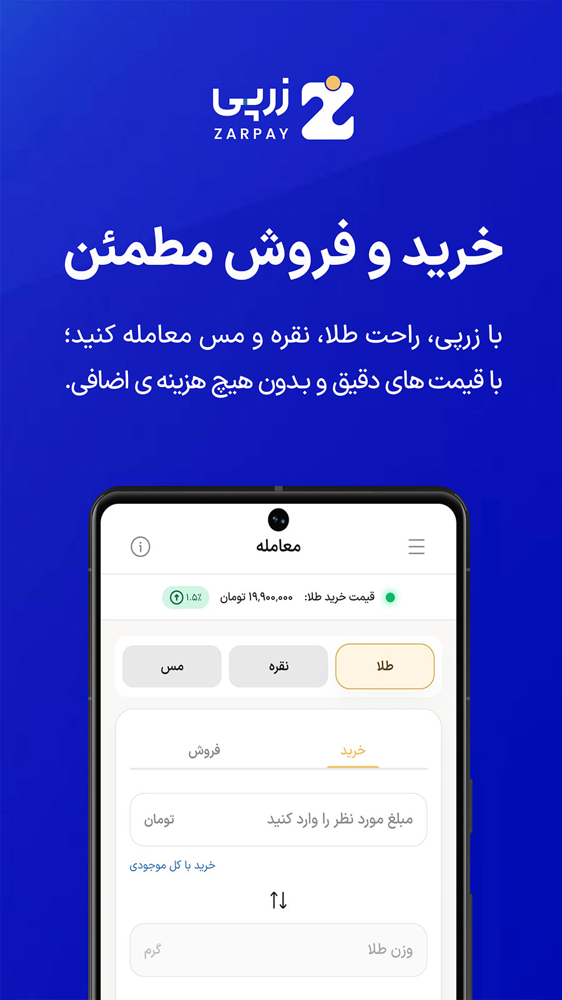
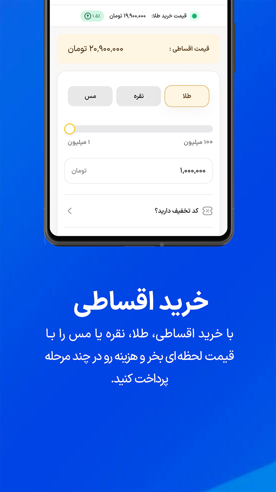
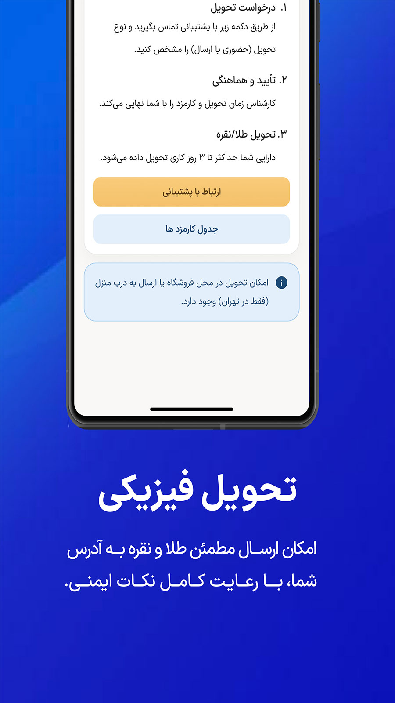
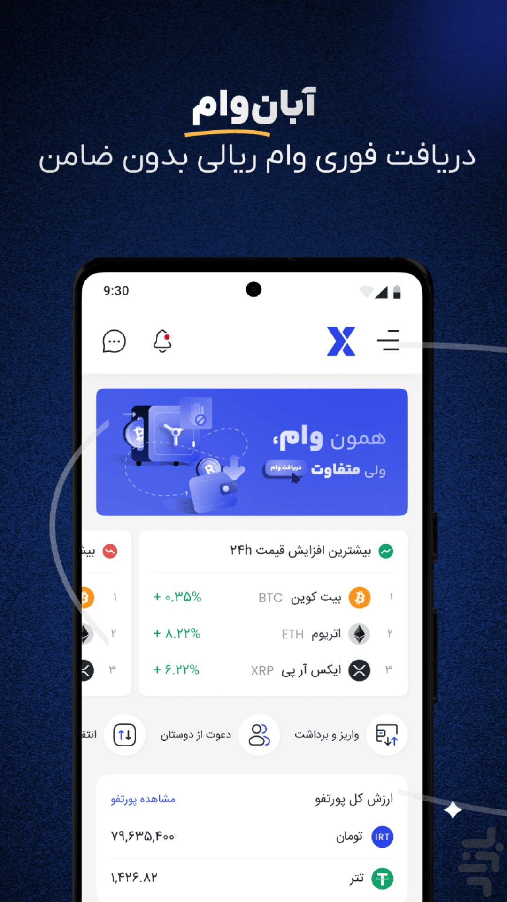
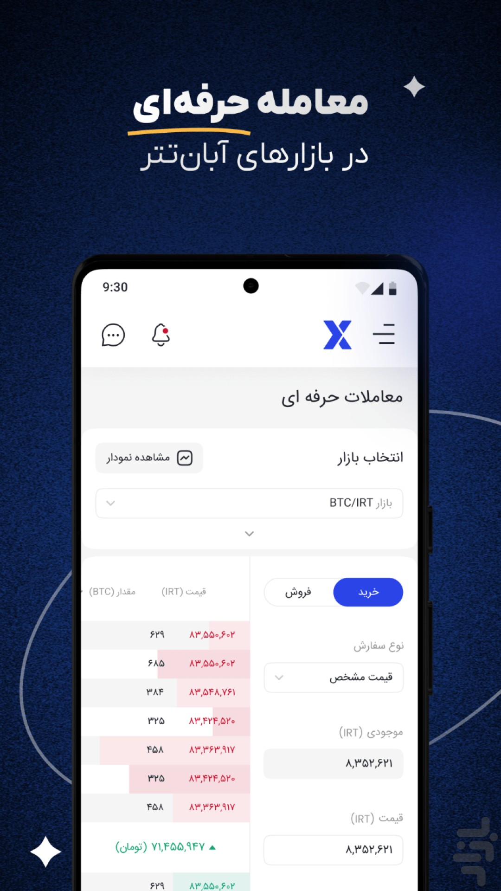
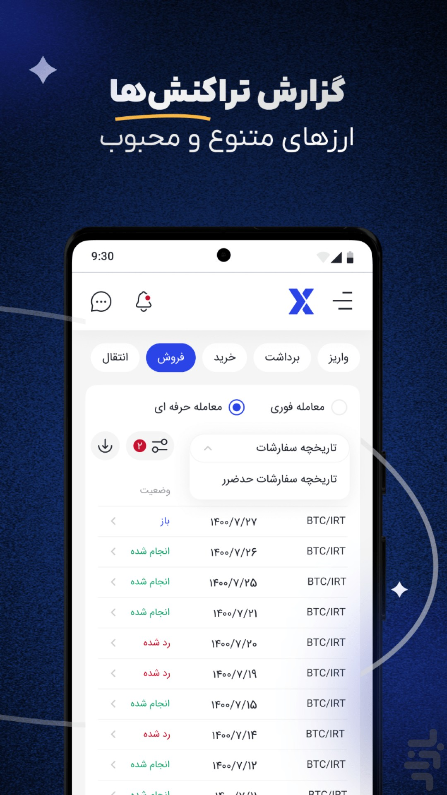
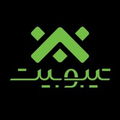

از ایده تا لانچ و ورود به فاز رشد
لید محصول زرپی
محصولاتی برای رشد واقعی.
من علی دلبرم؛ لید محصول در فینتک. محصول را از یک مسئله واقعی شروع میکنم، با داده جلو میبرم و تا جایی ادامه میدهم که اثرش برای کاربر و کسبوکار دیده شود.
0→1ساخت محصول از نقطه صفر
Growthتمرکز جدی روی رشد
Fintechفینتک، پرداخت و سرمایهگذاری
ZARPAY / PRODUCT
0 → 1 → Growth
▲
تسویه آنی
95%+
LIVE
تیم محصول
5
نفر
FINTECH✦PAYMENTS✦PRODUCT STRATEGY✦GROWTH✦DISCOVERY✦LEADERSHIP✦
FINTECH✦PAYMENTS✦PRODUCT STRATEGY✦GROWTH✦DISCOVERY✦LEADERSHIP✦
00
IMPACT SNAPSHOT
کمتر حرف، بیشتر اثر.
کاربر جدید در دو ماه
کاهش عملیات دستی
تومان درآمد مستقیم
01
ABOUT
برای من محصول یعنی پیوند سه چیز:
USERارزش واقعی
BUSINESSاثر قابلاندازهگیری
GROWTHرشد پایدار
مسیر حرفهای من از مواجهه مستقیم با کاربر و مسئلههای واقعی شروع شد و به مدیریت و رهبری محصول رسید. همین تجربه باعث شد محصول را فقط مجموعهای از فیچرها نبینم؛ مسئله، تجربه کاربر، داده و هدف کسبوکار باید کنار هم قرار بگیرند.
02
SELECTED WORK
تجربههایی که پشتشان یک مسئله واقعی بوده.
0→1 · FINTECH · GROWTH
ZarPay
از یک ایده اولیه، تا محصولی که باید هر روز بهتر شود و رشد کند.
بهعنوان یکی از همبنیانگذاران و Product Lead، از روز اول در تعریف Roadmap، اولویتبندی، متریکهای کسبوکار، تجربه خرید و فروش، سرویسهای API و تسویه ریالی نقش مستقیم داشتم.
Cash & Installment Trading
Partner API
Instant Settlement
Product Strategy
Growth
یکی از نتایج کلیدی
95%+
نرخ موفقیت تسویه آنی با سه بانک



BUY / SELL
INSTALLMENT
PHYSICAL DELIVERY

1,000+وام
30Bحجم وام
2Bدرآمد
6,000کاربر جدید
LENDING · PRODUCT · GROWTH
AbanLoan
محصولی که محصول، فنی و رشد باید برای لانچش همجهت میشدند.
با یک تیم ششنفره روی لانچ AbanLoan کار کردیم. برای من مهمترین بخش این تجربه فقط خروجی عددی نبود؛ هماهنگی واقعی بین Product، Design، Tech و Performance Marketing بود.
FIAT · INFRASTRUCTURE · UX
Payments & Fiat
گاهی بهترین تجربه کاربری، چیزی است که کاربر اصلاً نمیبیند.
روی سرویسهای واریز، برداشت، Reconciliation، Wallet و زیرساختهای ریالی کار کردم. نتیجه بخشی از این مسیر: کاهش شدید عملیات دستی، هزینه کمتر و تجربه پایدارتر.
−87%Manual Ops
+17%Instant Deposits
700MDirect Revenue


03
HOW I THINK
چهار اصل که تقریباً در همه تصمیمهای محصولی همراهم هستند.
Growth-driven Thinking
رشد را از ارزش واقعی برای کاربر، فعالسازی و بازگشت او شروع میکنم؛ نه از یک عدد تنها.
Product Strategy
قبل از «چی بسازیم؟»، باید جواب «چرا باید بسازیم؟» روشن باشد.
Fintech & Payments
در فینتک، اعتماد، پایداری و سرعت بخشی از تجربه کاربر هستند.
Product Leadership
لید بودن یعنی ایجاد وضوح، تصمیمگیری در ابهام و ساختن تمرکز برای تیم.
04
CAREER JOURNEY
آخرین تجربه، اول.
JAN 2024 — PRESENT
0→1 · Growth · Strategy
ZarPay
Co-founder & Product Lead

APR 2025 — NOV 2025
Execution · Product Management
Tibobit
Product Manager
JAN 2022 — APR 2025
Fintech · Lending · Fiat
AbanTether
Product Manager → Product Lead
LET'S TALK
یه مسئله محصولی خوب داری؟
درباره Product، Growth، Fintech یا یک فرصت همکاری، خوشحال میشم حرف بزنیم.